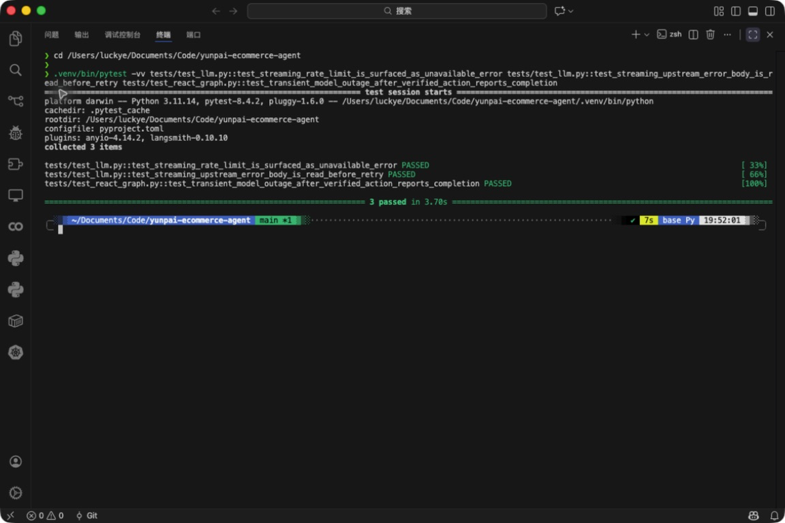
证据口径：
本页不再把测试结论重新排版成图片。每张图必须直接展示运行中的终端、Swagger 请求/响应或后台页面；11 个
verification.png 也都已校验为真实 PNG 数据。
Swagger 实际响应 FEATURE · F-101 · PR #5 · 20338bf
通用渠道适配器 SDK
实际请求 GET /v1/channels/adapters 返回 HTTP 200，并展示双适配器能力。操作与验证说明
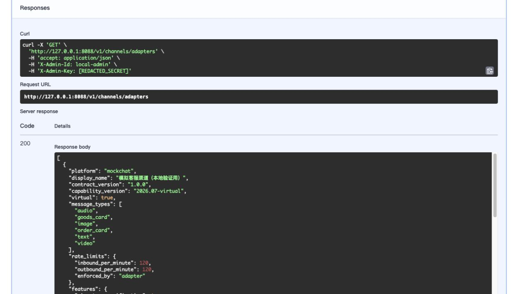
终端实景 DOCS · PR #1 · a7336de
macOS/Linux 快速启动
macOS arm64 实机检查 Python、Shell 启动器语法及 Git whitespace。操作与验证说明
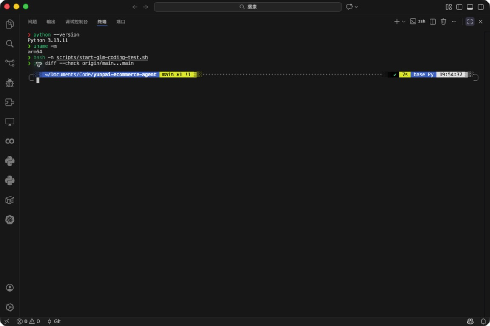
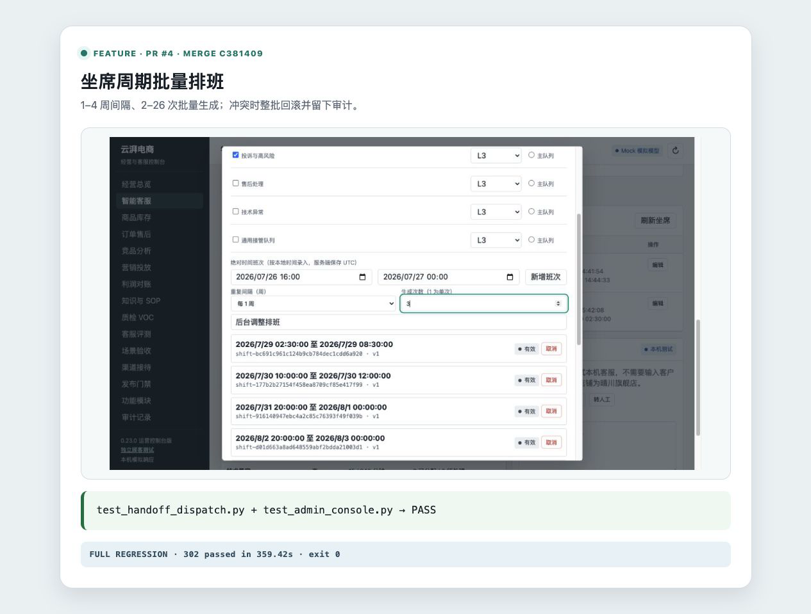
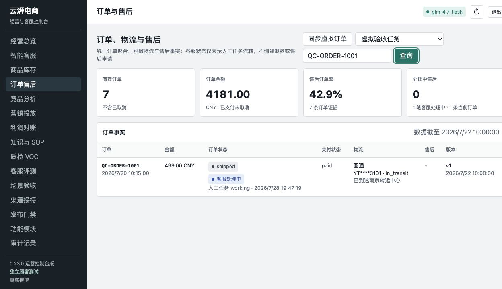
QC-ORDER-1001 保持 shipped，人工任务为 working，售后列为“-”。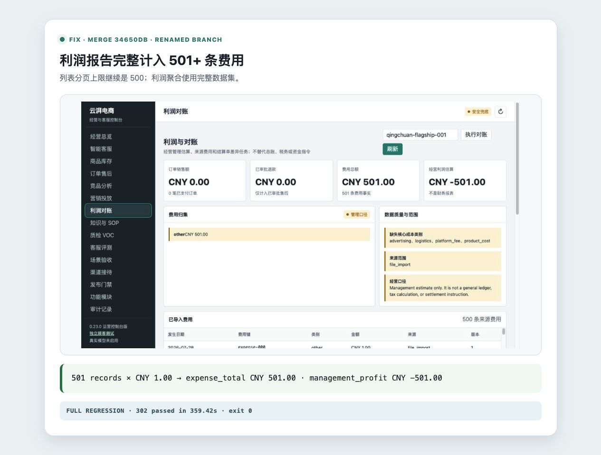
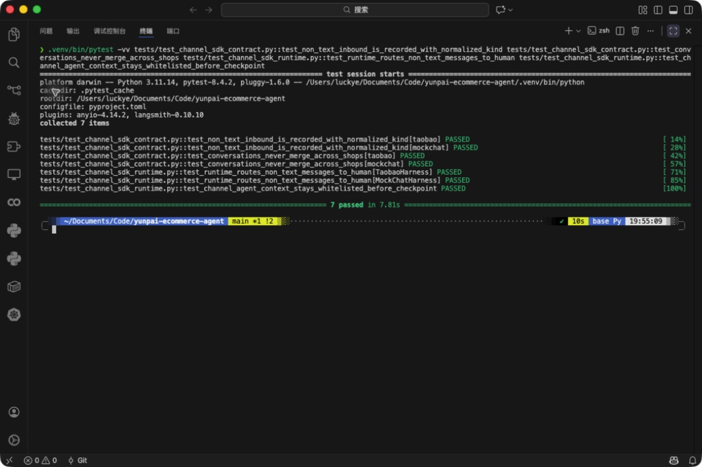
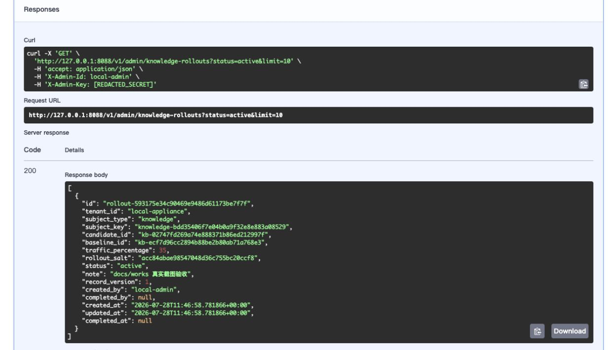
traffic_percentage: 35、status: active。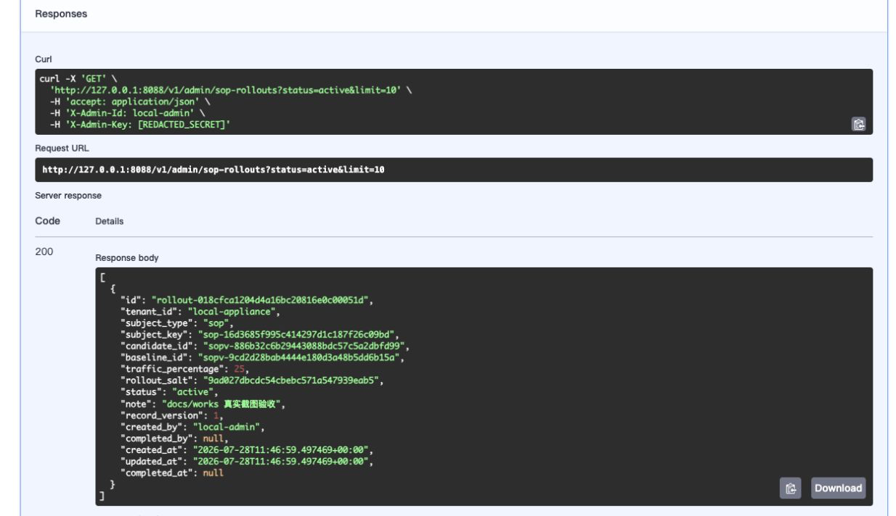
traffic_percentage: 25、status: active。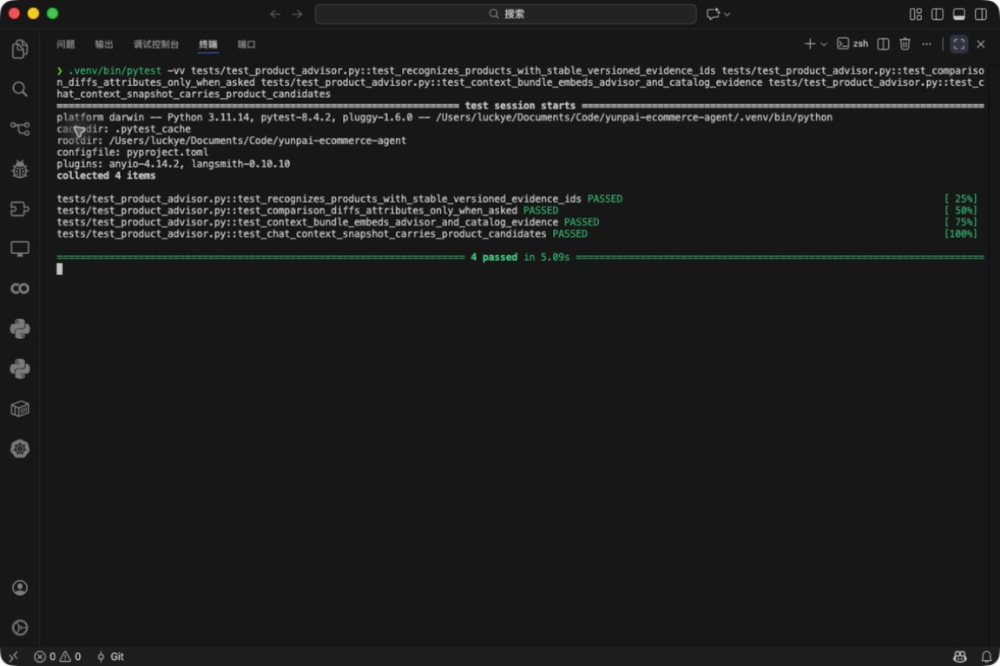
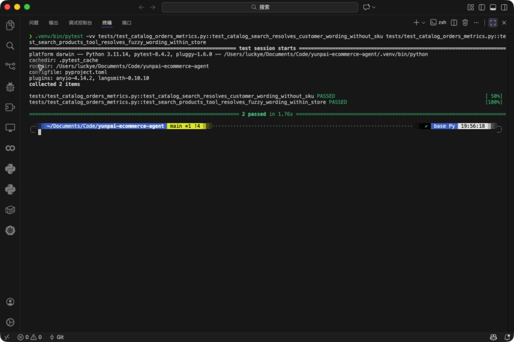